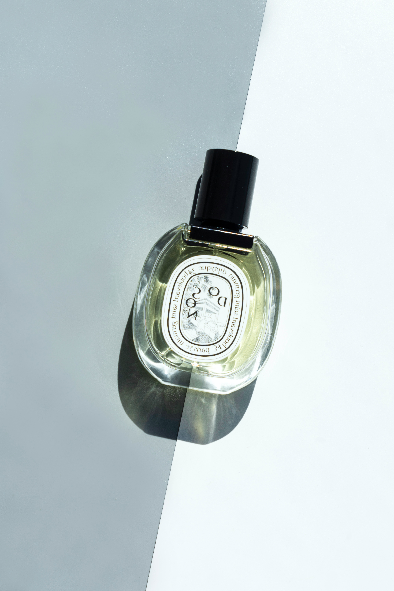

perfume is a mixture of fragrant essential oils or aroma compounds, fixatives and solvents, usually in liquid form, used to give the human body, animals, food, objects, and living-spaces an agreeable scent.
Ancient texts and archaeological excavations show the use of perfumes in some of the earliest human civilizations. Modern perfumery began in the late 19th century with the commercial synthesis of aroma compounds such as vanillin or coumarin, which allowed for the composition of perfumes with smells previously unattainable solely from natural aromatics.
